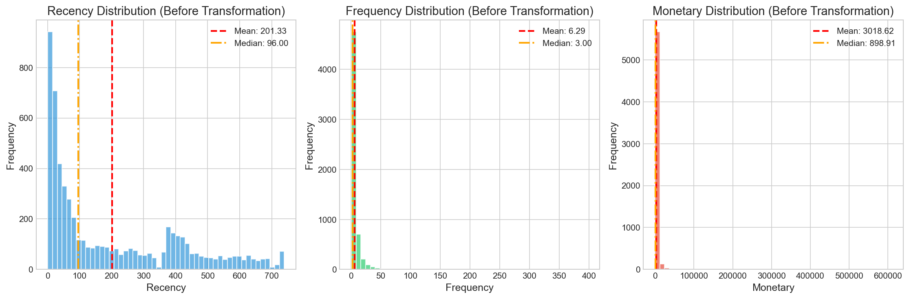
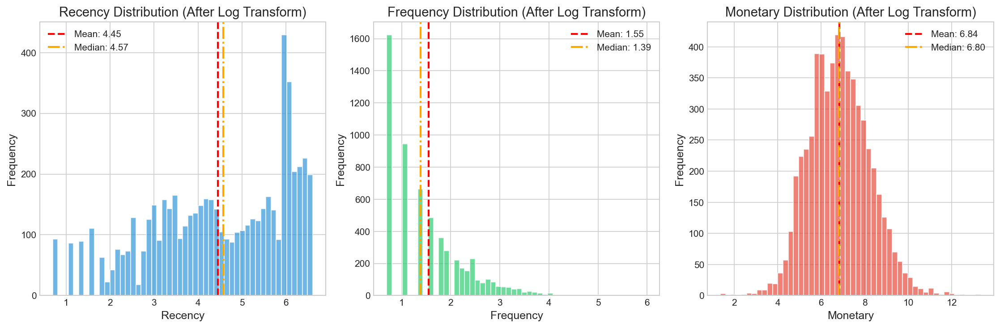
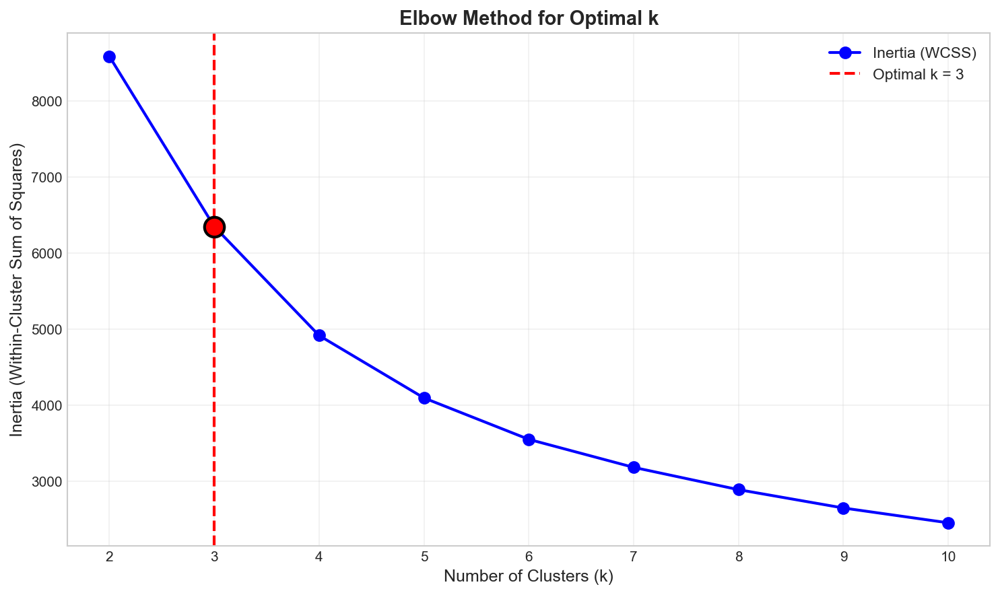
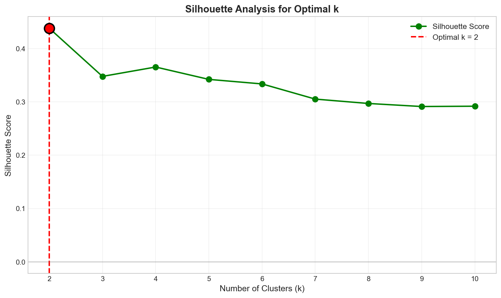
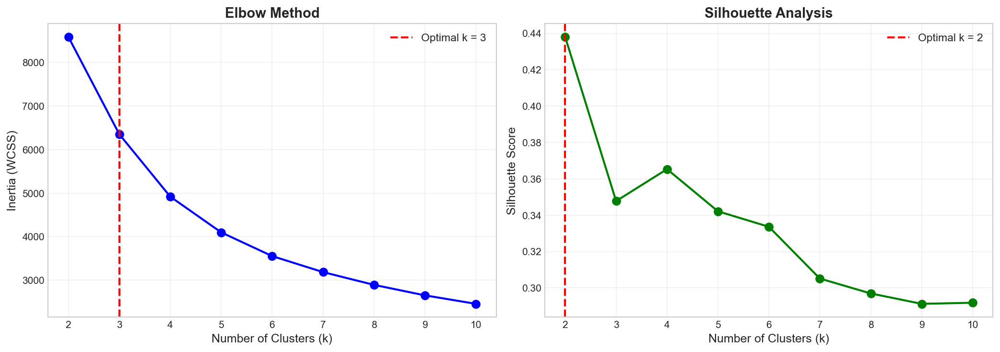
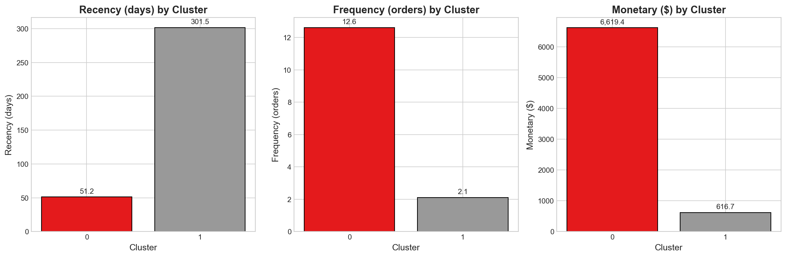
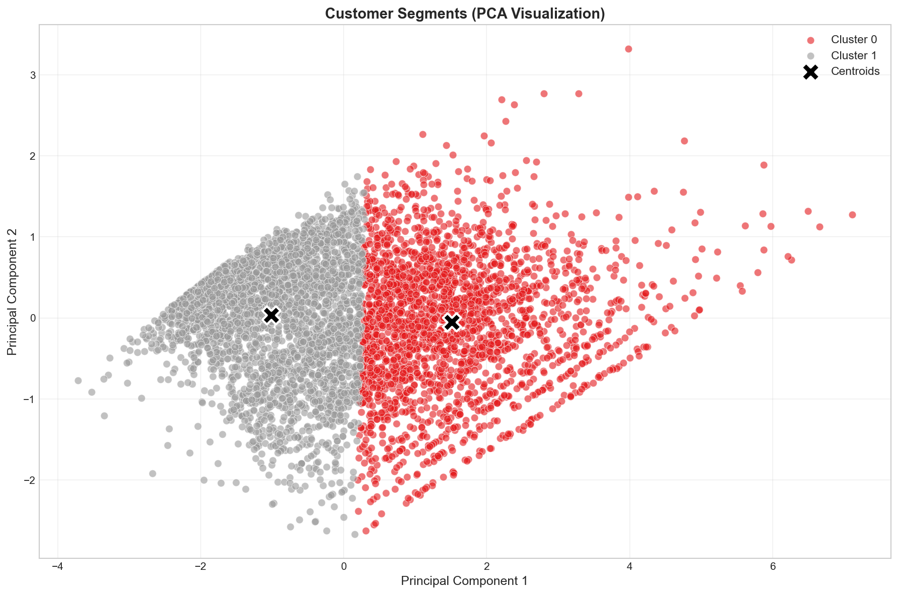

Müşteri segmentasyonu, pazarlama stratejilerinin etkinliğini artırmak için kritik öneme sahip bir analiz yöntemidir. Farklı müşteri gruplarının davranışlarını anlamak, işletmelerin hedefli kampanyalar oluşturmasına ve müşteri ilişkilerini güçlendirmesine olanak tanır.
RFM (Recency, Frequency, Monetary) analizi, müşteri segmentasyonunda yaygın olarak kullanılan bir yöntemdir:
k-Means algoritması, denetimsiz öğrenme yöntemleri arasında en yaygın kullanılan kümeleme algoritmalarından biridir. Bu projede, e-ticaret verisi üzerinde RFM analizi ile k-Means kümelemesi birleştirilerek müşteri segmentasyonu gerçekleştirilmiştir.
Bu çalışmada şu sorulara yanıt aranmıştır:
Bu raporun katkıları:
Çalışmada UCI Machine Learning Repository'den alınan Online Retail II veri seti kullanılmıştır. Bu veri seti, İngiltere merkezli bir online perakende şirketinin 2009-2011 yılları arasındaki işlemlerini içermektedir.
Veri seti iki ayrı sayfadan oluştuğu için (2009-2010 ve 2010-2011), analiz için iki sayfa birleştirilmiş ve toplam 1,067,371 satırlık ham işlem verisi elde edilmiştir. Bu yaklaşım, zaman aralığını genişleterek müşteri davranışını daha kapsayıcı biçimde yansıtır.
Tablo 1: Veri seti özellikleri
| Özellik | Değer |
|---|---|
| Toplam işlem sayısı | 1,067,371 |
| Temizlenmiş işlem sayısı | 805,549 |
| Benzersiz müşteri sayısı | 5,878 |
| Zaman aralığı | 2009-2011 (2 yıl) |
| Kaynak | UCI Machine Learning Repository |
Veri Temizleme Adımları:
Bu adımların amacı, iade/iptal gibi gerçek satın alma davranışını temsil etmeyen kayıtların etkisini azaltmak ve RFM hesaplamalarının anlamlı müşteri davranışına dayanmasını sağlamaktır.
Her müşteri için aşağıdaki RFM değerleri hesaplanmıştır:
RFM hesaplamaları şu şekilde özetlenebilir: Recency, son işlem tarihinden referans tarihe (2011-12-10) olan gün farkıdır; Frequency, benzersiz fatura sayısıdır; Monetary ise toplam harcama tutarıdır. Referans tarihinin veri setindeki son işlem tarihinden bir gün sonrası seçilmesi, en güncel müşteriler için Recency değerinin en düşük olması gerektiği varsayımıyla uyumludur.
Tablo 2: RFM istatistikleri (orijinal değerler)
| İstatistik | Recency (gün) | Frequency (sipariş) | Monetary ($) |
|---|---|---|---|
| Ortalama | 201.33 | 6.29 | 3018.62 |
| Standart Sapma | 209.34 | 13.01 | 14737.73 |
| Minimum | 1 | 1 | 2.95 |
| %25 | 26 | 1 | 348.76 |
| Medyan (%50) | 96 | 3 | 898.91 |
| %75 | 380 | 7 | 2307.09 |
| Maksimum | 739 | 398 | 608821.65 |

Şekil 1: RFM özelliklerinin orijinal dağılımları (dönüşüm öncesi)
1) Skewness (Çarpıklık) Analizi:
Fisher-Pearson çarpıklık katsayısı (g₁) aşağıdaki formül ile hesaplanmıştır:
g₁ = (1/n) × Σ((xᵢ - μ) / σ)³
Yorumlama: g₁ = 0 ise simetrik dağılım, g₁ > 0 ise sağa çarpık, g₁ < 0 ise sola çarpık.
RFM özellikleri özellikle Monetary ve Frequency için uzun kuyruklu dağılımlara sahiptir. Bu durum Öklid tabanlı algoritmalarda mesafe hesaplarını domine edebilir. Bu nedenle log-plus-one dönüşümü, büyük değerlerin etkisini azaltmak ve dağılımı daha dengeli hale getirmek için tercih edilmiştir.
Tablo 3: Skewness analizi sonuçları
| Özellik | Orijinal g₁ | Yorum | Log Sonrası g₁ | Yorum |
|---|---|---|---|---|
| Recency | 0.8870 | Sağa çarpık | -0.4885 | Yaklaşık simetrik |
| Frequency | 12.6367 | Aşırı sağa çarpık | 1.0012 | Hafif sağa çarpık |
| Monetary | 25.3078 | Aşırı sağa çarpık | 0.2650 | Yaklaşık simetrik |
2) Log Dönüşümü:
Log-plus-one dönüşümü uygulanarak özelliklerin değer aralıkları daraltılmıştır:
| Özellik | Orijinal Aralık | Dönüşüm Sonrası |
|---|---|---|
| Recency | [1, 739] | [0.69, 6.61] |
| Frequency | [1, 398] | [0.69, 5.99] |
| Monetary | [2.95, 608821.65] | [1.37, 13.32] |

Şekil 2: RFM özelliklerinin log dönüşümü sonrası dağılımları
3) Standardizasyon:
Z-score normalizasyonu uygulanarak tüm özellikler μ=0, σ=1 olacak şekilde standartlaştırılmıştır:
z = (x - μ) / σ
Bu proje denetimsiz öğrenme olduğundan ayrı bir eğitim/test bölmesi yapılmamış, ölçekleme parametreleri (μ ve σ) tüm veri üzerinden hesaplanmıştır. Log dönüşümü sonrası standardizasyon, RFM özelliklerini aynı ölçekte toplayarak k-Means'in mesafe tabanlı yapısına uygunluk sağlar.
k-Means algoritması aşağıdaki parametrelerle uygulanmıştır:
Elbow (Dirsek) metodu, farklı k değerleri için Within-Cluster Sum of Squares (WCSS/Inertia) değerlerini hesaplayarak optimal küme sayısını belirlemeye yardımcı olur. "Dirsek" noktası, WCSS'deki düşüşün yavaşladığı noktadır.
Tablo 4: Elbow analizi sonuçları
| k | Inertia (WCSS) |
|---|---|
| 2 | 8,588.81 |
| 3 | 6,351.98 |
| 4 | 4,918.64 |
| 5 | 4,097.83 |
| 6 | 3,552.98 |
| 7 | 3,184.84 |
| 8 | 2,891.60 |
| 9 | 2,650.60 |
| 10 | 2,455.91 |

Şekil 3: Elbow metodu ile optimal k belirleme (k=3 önerisi)

Şekil 4: Silhouette analizi ile optimal k belirleme (k=2 önerisi)

Şekil 5: Elbow ve Silhouette analizlerinin karşılaştırması
Tablo 6: Final küme özellikleri (k=2)
| Küme | Müşteri Sayısı | Oran | Recency (gün) | Frequency | Monetary ($) | Segment Profili |
|---|---|---|---|---|---|---|
| 0 | 2,352 | 40.0% | 51.2 | 12.6 | 6,619.45 | Recent, Frequent, High-value |
| 1 | 3,526 | 60.0% | 301.5 | 2.1 | 616.70 | Old, Rare, Low-value |
Küme Yorumlaması:
Küme 0 - VIP Müşteriler (40%):
Küme 1 - Pasif Müşteriler (60%):

Şekil 6: Kümelerin RFM özelliklerine göre karşılaştırması
3 boyutlu RFM özellikleri, Principal Component Analysis (PCA) ile 2 boyuta indirgenmiştir:
Tablo 7: PCA açıklanan varyans oranları
| Bileşen | Açıklanan Varyans | Kümülatif |
|---|---|---|
| PC1 | 76.37% | 76.37% |
| PC2 | 18.77% | 95.14% |
İlk iki bileşen, toplam varyansın %95.14'ünü açıklamaktadır, bu da 2D görselleştirmenin orijinal verideki bilgiyi büyük ölçüde koruduğunu göstermektedir.

Şekil 7: PCA ile 2 boyutlu küme görselleştirmesi
Tablo 8: Final model metrikleri
| Metrik | Değer |
|---|---|
| Küme Sayısı (k) | 2 |
| Silhouette Skoru | 0.4381 |
| Inertia (WCSS) | 8,588.81 |
| PCA Varyans (%) | 95.14% |
| Çalışma Süresi | ~96 saniye |
Silhouette skorunun k=2 için belirgin biçimde yüksek olması ve müşteri segmentlerinin iş açısından yorumlanabilir olması nedeniyle k=2 seçilmiştir. K=3 ve k=4 değerlerinde inertia azalmasına rağmen silhouette düşmekte, bu da kümelerin ayrışmasının zayıfladığını göstermektedir.
Orijinal RFM değerlerinin aksine aşırı sağa çarpık olduğu gözlemlenmiştir (özellikle Monetary için g₁=25.31). Log dönüşümü uygulandıktan sonra çarpıklık değerleri kabul edilebilir seviyelere inmiştir. k-Means algoritması, Öklid mesafesine dayandığı için verilerin normal dağılıma yakın olması kümeleme kalitesini artırmaktadır.
İki yöntem farklı k değerleri önermiştir:
k=2 seçilmesinin nedenleri:
Elde edilen segmentler, klasik RFM analizindeki müşteri tiplerini yansıtmaktadır. Bu segmentasyon, pazarlama ekiplerinin farklı müşteri gruplarına özel stratejiler geliştirmesine olanak tanır.
Çalışma modüler bir yapıda kurgulanmış olup veri yükleme, ön işleme, kümeleme ve görselleştirme adımları ayrı dosyalar halinde düzenlenmiştir. Sonuçlar results/ klasörüne otomatik kaydedilmekte ve report.html dosyası bu çıktılardan dinamik olarak üretilmektedir. Bu yapı, farklı k değerleri veya yeni veri setleri ile tekrar çalıştırmaya uygundur.
Veri seti anonimleştirilmiş işlem kayıtlarından oluşmaktadır ve kişisel veri içermemektedir. Segmentasyon çıktıları, bireysel müşteri profillerini değil, toplu davranış eğilimlerini göstermektedir. Model çıktılarının kampanya tasarımında kullanılmasında ayrımcılığa yol açabilecek uygulamalardan kaçınılmalıdır.
İlerleyen çalışmalarda zaman serisi etkileri, müşteri yaşam boyu değeri ve kampanya tepkileri gibi ek değişkenlerin modele dahil edilmesi planlanabilir. Ayrıca k-Means dışındaki yöntemler (DBSCAN, GMM) ile daha esnek kümeleme denemeleri yapılabilir.
Bu projede, Online Retail II veri seti üzerinde k-Means kümeleme algoritması ile müşteri segmentasyonu başarıyla gerçekleştirilmiştir. Elde edilen sonuçlar:
Bu segmentasyon sonuçları, pazarlama stratejilerinin kişiselleştirilmesi, müşteri ilişkileri yönetimi ve kaynak tahsisi kararlarında kullanılabilir.
Rapor Güncellenme Tarihi: 2026-06-03 22:34:00